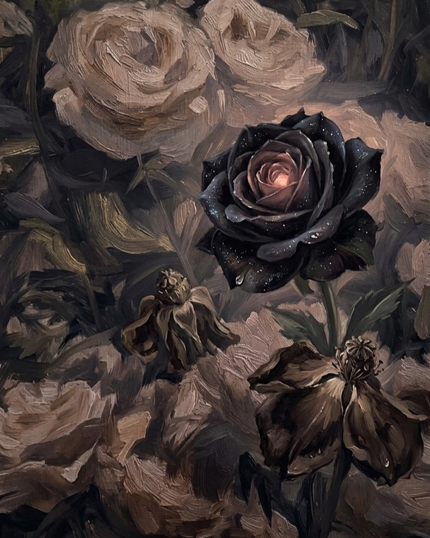

Jardin de la vida
En el jardín de la vida abundan flores, todas perfectas, pero de todas ellas hay una que se distingue no por su perfección, sino por su extrañeza, que la hace ver fuerte pero tierna. Sus pétalos color negro, como la noche estrellada, la hacían ver hermosa y única. Cada día iba a ver aquella flor para conversar, regar, cuidar y admirar, y al pasar los días me di cuenta de que me enamoré de ella, y comencé amar a aún más cada parte de su ser.
Su belleza era como ver un atardecer que tiñe el cielo de recuerdos perdidos, su sonrisa era como un rayo de sol que te iluminaba el día , su aroma era dulce y refrescante, su compañía se sentia cálido y pura, haciéndote desear que todo sea eterno... pero nada es eterno. Ya que una flor no es eterna, a menos que la mates, es mejor solo quedar con los recuerdos, que dañar sus pétalos. Pero siempre habrá un ricon en mis memorias donde está la flor negra, de la cual me enamoré a primera vista.